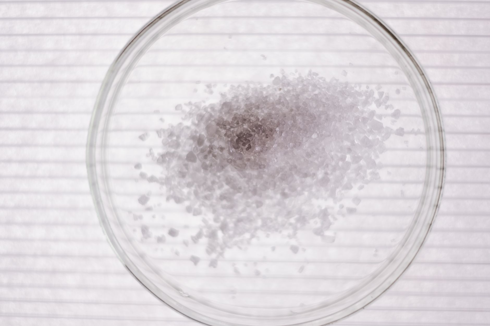

희토류 휴전 연장, 법적 기한은 그대로 남았다

[자료사진] 기사와 무관한 이미지입니다.
- 희토류 휴전이 연장됐으나 법적 이행 기한은 그대로 유지됐다
- 갈륨·게르마늄이 확보하기 어려운 구조적 이유에 대한 분석이 제기됐다
- 핵심 광물 공급망 투자 경쟁이 지속되고 있으나 실질적 다변화 성과는 불확실하다
무슨 일이 있었나
2026년 10월 30일(현지시간) 환경 전문 매체 엔바이런멘털 리더는 희토류 관련 휴전이 연장됐으나 법적 기한은 그대로 유지되고 있다고 보도했다. 휴전 자체는 시한이 늘어났지만, 그에 수반된 법적 이행 일정은 변경되지 않았다는 것이다. 어떤 당사자들 사이의 어떤 분쟁인지에 대한 공식적 세부 내용은 현재 추가 확인이 필요한 상태다.
같은 날 광물 분석 매체 아조마이닝(AZoMining)은 갈륨과 게르마늄이 왜 확보하기 어려운 광물인지를 구조적으로 분석한 기사를 발행했다. 두 광물은 주로 아연·보크사이트 제련 과정의 부산물로 생산되기 때문에, 수요가 늘어도 생산량을 독립적으로 늘리기 어렵다는 점이 핵심 제약으로 꼽힌다.
왜 주목해야 하나
갈륨과 게르마늄은 반도체·광통신·태양광 소재에 두루 쓰인다. 중국이 주요 생산국으로, 수출 통제 조치를 반복적으로 활용해 왔다. FII 인스티튜트는 2026년 10월 24일 발표에서 핵심 광물 공급망 투자 경쟁이 가속화되고 있다고 짚었다.
이번 휴전 연장은 긴장이 일시 완화된 것으로 읽힐 수 있지만, 법적 기한이 유지된다는 점은 이행 의무가 사라지지 않았음을 뜻한다. 단기 긴장 완화와 중장기 구조 변화를 구분해 살펴볼 필요가 있다.
조달에 어떤 영향이 있을까
갈륨·게르마늄을 원재료 또는 부품 투입재로 쓰는 조달 담당자라면, 현재 계약상 가격조정 조항이 이 같은 가격 변동성을 커버하는지 점검해볼 수 있다. 또한 단일 공급처 의존도와 대체 공급처 인증에 필요한 기간도 함께 확인해볼 사안이다.
앞으로 볼 변수
- Rare Earth Truce Is Extended, but Its Legal Deadlines Stand - Environmental Leader · GoogleNews · 2026-10-30
- Gallium and Germanium: Why Are These Critical Minerals So Difficult to Secure? - AZoMining · GoogleNews · 2026-10-31
- The Race for Critical Minerals: Investing in the Supply Chains of Tomorrow - FII Institute · GoogleNews · 2026-10-24
이 포스팅은 쿠팡 파트너스 활동의 일환으로 수수료를 제공받습니다.